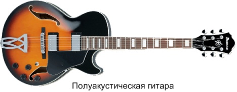

Полуакустическая
Или, как её ещё называют, джазовая гитара сочетает в себе плюсы, как акустики, так и электрогитары. От первой ей достался полый корпус с резонирующими отверстиями, от второй звукосниматели и вся электронная начинка. Хоть у такой гитары и есть черты акустики, играть на ней без усилителя нельзя, так как отсутствует большое резонаторное отверстие на верхней деке и пустого пространства внутри неё слишком мало. Гитары этого типа чаще всего вы можете услышать в джазе, за что они и получили второе название.
